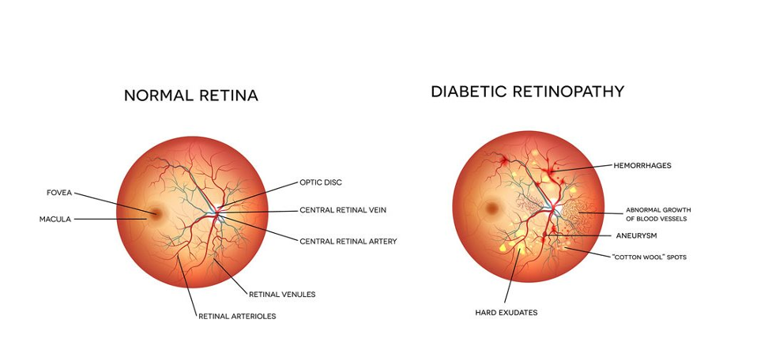

What is Explainable AI?
Explainable AI is methodology to explain the solutions of the Artificial Intelligence to the real world problems. Explainable AI is the bridge between what model understands while doing prediction and providing explanation for it the humans. As technology is expanding into various domains right from shopping to academics to and other niche domains such as house cleaning - it is significantly impacting our lives. Today, there is a surge in data all around, and the use of machine learning as gone up exponentially which is hugely impacting life. Making a machine trustworthy and reliable is one of the most important goals of data science today. Models are many times used as black boxes, wherein we give input, know little of what happens inside the model, and get an output.
Why Model Interpretability is important?
Models are many times used as black boxes, wherein we give a particular input, know little of what happens inside the model, and get an output. But an important question that often gets overlooked is 'Why?'. To understand why explainability is important in data science, let us take an example of diabetic retinopathy - a diabetes complication that affects the eyes. It is caused by damage to the blood vessels of the light-sensitive tissue at the back of the eye (retina). Let's assume we use a Deep Learning model with Convolutional Neural Networks for the classification of the normal eye from the diabetic eye. We can easily make a model that does a fairly good job with a validation accuracy of 90%. Then, a few questions may arise - what did the model see in the image to classify it? Did the model look into the same diagnostic parts of the images as done by the doctors? Or did it do something else? This is a very important context wherein a person can lose eyesight if he/she is misdiagnosed (if our model says the eye is fine but the eye was damaged, someone is going to be in big trouble!). In such cases, explainability is meant to engender trust from a model.
Resources
Checkout the video for more information.Read more about it on eBook
A great read for a simplified explanation
Research Head